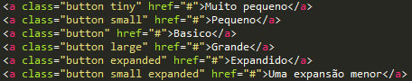

Um botão básico pode ser criado com marcação mínima. Os botões podem ser usados para muitas finalidades,por isso é importante usar a TAG certa.
Use a tag <'a'> se o botão for um link para outra página ou um link para uma âncora dentro de uma página.
Use a tag <'button'> se o botão executar uma ação que muda algo na página atual.
Voce pode colocar Classes adicionais ao seu botão para alterar seu tamanho e forma.
Voce pode colocar Adicionar classes de cores para dar aos botões um significado adicional.
Adicione a classe .hollow a um botão para dar-lhe um estilo oco.